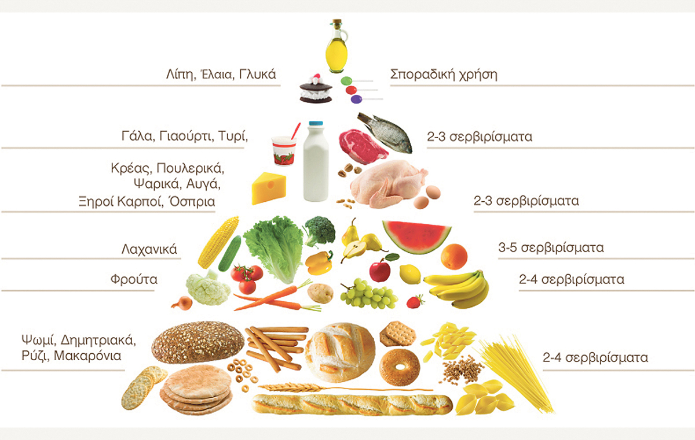

10 Συμβουλές για μια ισορροπημένη διατροφή
- Τρώγε ποικιλία τροφίμων
Χρειάζεσαι περισσότερα από 40 διαφορετικά θρεπτικά συστατικά για να έχεις καλή υγεία και κανένα τρόφιμο δε μπορεί να τα παρέχει όλα. Η παροχή τροφίμων στις μέρες μας διευκολύνει το να τρώς ευρεία ποικιλία τροφίμων είτε αγοράζοντας φρέσκα τρόφιμα και να τα μαγειρεύεις, είτε εκμεταλλευόμενος προμαγειρεμένα πιάτα και γεύματα, είτε παραγγέλνοντας απ’ έξω. Ισορρόπησε τις επιλογές σου σε βάθος χρόνου! Αν έφαγες μεσημεριανό με υψηλή περιεκτικότητα σε λίπος, φάε ένα χαμηλό σε λίπος βραδινό. Αν μια μέρα φάς μια μεγάλη μερίδα κρέατος για βραδινό, προτίμησε ίσως το ψάρι την επόμενη μέρα.
- Βάσισε τη διατροφή σου σε πολλά τρόφιμα πλούσια σε υδατάνθρακες
Οι περισσότεροι άνθρωποι δεν τρώνε αρκετά τρόφιμα όπως το ψωμί ολικής, τα ζυμαρικά, το ρύζι, άλλα δημητριακά και πατάτες. Περισσότερες από τις μισές θερμίδες στη διατροφή σου πρέπει να προέρχονται από αυτά τα τρόφιμα. Δοκίμασε επίσης ψωμί ολικής, ζυμαρικά και άλλα δημητριακά ολικής άλεσης για να αυξήσεις την πρόσληψη ινών.
- Απόλαυσε πολλά φρούτα και λαχανικά
Οι περισσότεροι, δεν τρώμε αρκετά από αυτά τα τρόφιμα παρότι παρέχουν σημαντικά προστατευτικά θρεπτικά συστατικά. Προσπάθησε να τρώς τουλάχιστον πέντε μερίδες ημερησίως και, αν δεν σου αρέσουν πολύ στην αρχή, δοκίμασε νέες συνταγές ή δες τι έτοιμα πιάτα υπάρχουν διαθέσιμα στο σούπερ μάρκετ.
- Διατήρησε υγιές σωματικό βάρος και νιώσε καλά
Το σωστό βάρος εξαρτάται από πολλούς παράγοντες, μεταξύ των οποίων το φύλο, η ηλικία, το ύψος σου και η κληρονομικότητα. Το υπερβάλλον σωματικό βάρος αυξάνει τον κίνδυνο για πολλές παθήσεις, όπως οι καρδιαγγειακές και ο καρκίνος. Το υπερβάλλον σωματικό λίπος προκύπτει όταν τρως περισσότερες θερμίδες από όσες χρειάζεσαι. Αυτές οι επιπλέον θερμίδες μπορεί να προέρχονται από οποιοδήποτε θρεπτικό συστατικό με θερμιδική αξία – πρωτεΐνη, λίπος, υδατάνθρακας ή αλκοόλ – αλλά το λίπος είναι η πιο συμπυκνωμένη πηγή θερμίδων. Η σωματική δραστηριότητα είναι ένας καλός τρόπος να αυξήσεις την ενέργεια (θερμίδες) που δαπανάς και μπορεί να σε κάνει να νιώσεις ωραία. Το μήνυμα είναι απλό: αν παίρνεις βάρος, πρέπει να τρώς λιγότερο και να είσαι περισσότερο δραστήριος.
- Τρώγε μέτριες μερίδες – μείωσε κάποια τρόφιμα, μην τα αποκλείεις
Αν κρατάς το μέγεθος της μερίδας σε λογικά επίπεδα, είναι ευκολότερο να τρως όλα τα τρόφιμα που σε ευχαριστούν χωρίς να χρειαστεί να αποκλείσεις κάποια. Παραδείγματος χάριν, λογικές μερίδες είναι: 100g κρέατος, ένα μέτριο φρούτο, μισό φλιτζάνι ωμά ζυμαρικά και 50ml παγωτού. Τα προμαγειρεμένα γεύματα μπορούν να είναι ένας χρήσιμος τρόπος για να ελέγξεις το μέγεθος της μερίδας και συχνά έχουν τη θερμιδική αξία στη συσκευασία για να σε βοηθήσουν αν μετράς θερμίδες. Αν τρως έξω, θα μπορούσες να μοιραστείς τη μερίδα με κάποιο φίλο.
- Τρώγε συχνά γεύματα
Η παράλειψη γευμάτων, ειδικά του πρωινού, μπορεί να οδηγήσει σε ανεξέλεγκτη πείνα η οποία συχνά έχει ως αποτέλεσμα την υπερφαγία. Τα μικρά γεύματα (σνακ) μεταξύ των κυρίων γευμάτων μπορούν να κατευνάσουν την πείνα, αλλά μην τρώς τόσο πολύ ώστε να αντικαταστήσουν τα κανονικά γεύματα. Μην ξεχνάς να υπολογίζεις τα σνακ ως μέρος της συνολικής πρόσληψης θερμίδων.
- Κατανάλωνε πολλά υγρά
Οι ενήλικοι πρέπει να πίνουν τουλάχιστον 1.5 λίτρο υγρών ημερησίως! Ή ακόμα περισσότερο, αν κάνει πολλή ζέστη ή αν είσαι σωματικά δραστήριος. Το απλό νερό βρύσης είναι προφανώς μια καλή πηγή υγρών αλλά η ποικιλία μπορεί να είναι και απολαυστική και υγιεινή. Εναλλακτικές επιλογές είναι οι χυμοί, τα αναψυκτικά, το τσάι, ο καφές, το γάλα, κ.τ.λ.
- Κουνήσου
Όπως είδαμε, πολλές θερμίδες και λίγη σωματική δραστηριότητα μπορούν να έχουν ως αποτέλεσμα αύξηση του σωματικού βάρους. Η μέτρια σωματική δραστηριότητα βοηθά στην καύση αυτών των επιπλέον θερμίδων. Είναι επίσης καλή για την καρδιά και το κυκλοφορικό σύστημα και για τη γενικότερη υγεία και ευεξία. Άρα, βάλε τη σωματική δραστηριότητα στο καθημερινό σου πρόγραμμα. Χρησιμοποίησε τις σκάλες αντί του ασανσέρ (προς τα πάνω και προς τα κάτω!). Πήγαινε μια βόλτα στο μεσημεριανό σου διάλειμμα. Δεν χρειάζεται να είσαι αθλητής για να γίνεις δραστήριος!
- Ξεκίνησε τώρα! Και κάνε τις αλλαγές σταδιακά
Οι σταδιακές αλλαγές στον τρόπο ζωής είναι πιο εύκολες από τις δραστικές αλλαγές αμέσως. Για τρεις μέρες, κατέγραψε τα τρόφιμα και τα ποτά που καταναλώνεις στα κυρίως και ενδιάμεσα γεύματα – Μήπως τρως πολύ λίγα φρούτα ή/και λαχανικά; Μια καλή αρχή είναι να προσπαθήσεις να τρως ένα παραπάνω φρούτο ή μία μερίδα λαχανικών την ημέρα. Μήπως τα αγαπημένα σου φαγητά έχουν υψηλή περιεκτικότητα σε λίπος και σε κάνουν να παίρνεις βάρος; Μην τα αποκλείσεις, και νιώσεις δυστυχισμένος αλλά προσπάθησε να επιλέξεις εκδοχές τους, χαμηλές σε λιπαρά ή να τρως μικρότερες ποσότητες. Και άρχισε να χρησιμοποιείς τις σκάλες στη δουλειά!
- Να θυμάσαι ότι η ισορροπία είναι το παν
Δεν υπάρχουν «καλά» ή «κακά» τρόφιμα, μόνο καλή ή κακή διατροφή. Μη νιώθεις ενοχές για τα τρόφιμα που σου αρέσουν αλλά κατανάλωνε τα με μέτρο και επίλεξε άλλα τρόφιμα που θα σου παρέχουν την ισορροπία και την ποικιλία που απαιτούνται για καλή υγεία.
Πηγή: The European Food Information Council, runningmagazine.gr